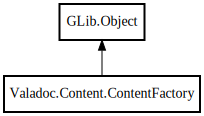

Valadoc.Content.ContentFactory – valadoc Reference Manual
Packages
valadoc
Valadoc
Content
ContentFactory
ContentFactory
configure
create_comment
create_embedded
create_headline
create_link
create_list
create_list_item
create_note
create_page
create_paragraph
create_run
create_source_code
create_table
create_table_cell
create_table_row
create_taglet
create_text
create_warning
create_wiki_link
set_style_attributes
_locator
_modules
_settings
ContentFactory
Object Hierarchy:

Description:
public
class
ContentFactory
:
Object
Namespace:
Valadoc.Content
Package:
valadoc
Content:
Creation methods:
public
ContentFactory
(
Settings
settings,
ResourceLocator
locator,
ModuleLoader
modules)
Methods:
private
inline
ContentElement
configure
(
ContentElement
element)
public
Comment
create_comment
()
public
Embedded
create_embedded
()
public
Headline
create_headline
()
public
Link
create_link
()
public
List
create_list
()
public
ListItem
create_list_item
()
public
Note
create_note
()
public
Page
create_page
()
public
Paragraph
create_paragraph
()
public
Run
create_run
(
Style
style)
public
SourceCode
create_source_code
()
public
Table
create_table
()
public
TableCell
create_table_cell
()
public
TableRow
create_table_row
()
public
Taglet
?
create_taglet
(
string
name)
public
Text
create_text
(
string
? text =
null
)
public
Warning
create_warning
()
public
WikiLink
create_wiki_link
()
public
ContentElement
set_style_attributes
(
StyleAttributes
element,
VerticalAlign
? valign,
HorizontalAlign
? halign,
string
? style)
Fields:
private
ResourceLocator
_locator
private
ModuleLoader
_modules
private
Settings
_settings
Inherited Members:
All known members inherited from class GLib.Object
@get
@new
@ref
@set
add_toggle_ref
add_weak_pointer
bind_property
connect
constructed
disconnect
dispose
dup_data
dup_qdata
force_floating
freeze_notify
get_class
get_data
get_property
get_qdata
get_type
getv
interface_find_property
interface_install_property
interface_list_properties
is_floating
new_valist
new_with_properties
newv
notify
notify_property
ref_count
ref_sink
remove_toggle_ref
remove_weak_pointer
replace_data
replace_qdata
set_data
set_data_full
set_property
set_qdata
set_qdata_full
set_valist
setv
steal_data
steal_qdata
thaw_notify
unref
watch_closure
weak_ref
weak_unref